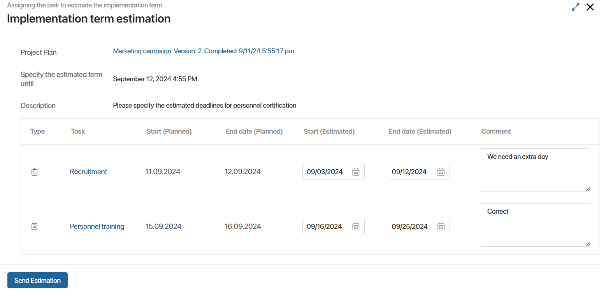

Estimated completion dates are a tool to monitor project progress. Compare planned and estimated dates of tasks to take timely action to meet deadlines.
You can work with estimated dates if a task has the Task or Milestone type and the status In progress. Initially, in such a task, the estimated dates are set by default and coincide with the planned dates. However, in the course of the project, the manager can request the updated estimated dates of their tasks from the participants, as well as change them independently.
You can view the estimated dates on the plan chart. To do this, open the project page, go to the calendar plan, and select the Estimation option on the toolbar in the left corner.
Change estimated dates
A manager with the permissions to edit a plan can update the estimated dates. To do this, go to the plan editing mode and select a convenient method:
- On the toolbar in the left corner, select the Estimation option. The chart will display the estimated dates of the tasks. Then pull the edge of the task segment. Its start and end dates will change.
- Open the task page in the plan. To do this, hover the cursor over its name, click the three dots icon, and select Open. Then set new values in the Start date (Estimated) and End date (Estimated) fields.
Request estimation
If you have the rights to edit the plan, you can send a request to project participants to set estimated dates for their tasks. To do this, open the published version of the plan for editing and click Request Estimation.
In the opened window, you will see a list of tasks with Task and Milestone types and In progress status.
You can sort the tasks by descending or ascending values in the selected column of the table. To do this, click on the column name, and then to the right of it click or .
Form a request:
- Select tasks by checking the boxes to the left of their names. To quickly find a specific task and mark it, use the search by parameters: name, type, executor, planned start, and completion dates.
- In the Executor field, by default, the person responsible for the task is specified. You can select another project participant.
- Specify a deadline for the request and a description.
Click Send. The specified executors will receive the corresponding task.
Perform the task to set an estimated date
A project participant will receive a request for estimated dates in the form of a task that contains a link to the project plan and a list of plan tasks.
You can sort the tasks by descending or ascending values in the selected column of the table. To do this, click on the column name, and then to the right of it click or .
To run the request:
- Specify the deadlines in the Start (Estimated) and End date (Estimated) fields.
- Add a comment for each task.
- Click Send Estimation.

The new estimated dates can then be viewed:
- In the project plan in the Estimation mode.
- On the task page, if you open it on the project plan review form.
The task executor will receive a notification about the change of the estimated dates.
Compare estimated dates with planned dates
To visually compare the estimated dates with the planned dates:
- Open the plan for editing.
- From the toolbar in the left corner, select Estimation to display the forecast dates on the plan.
- Click the gear icon and enable the Compare with the current one option. The planned dates will be marked with a dark gray line.
Found a typo? Select it and press Ctrl+Enter to send us feedback